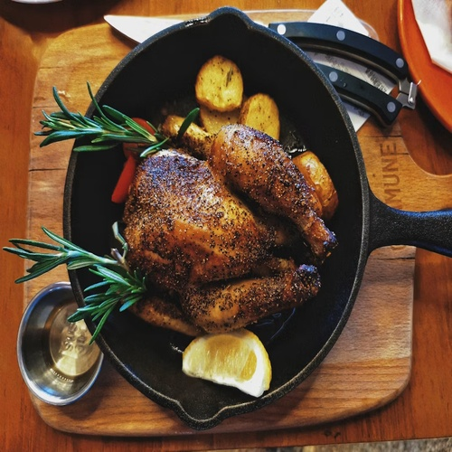
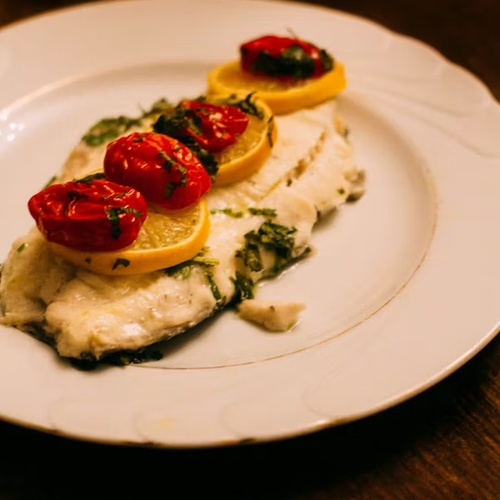
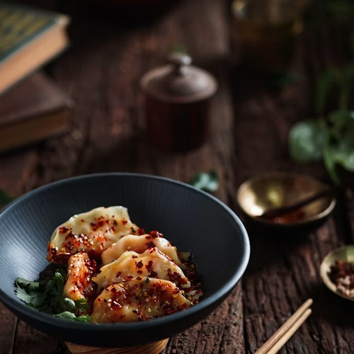
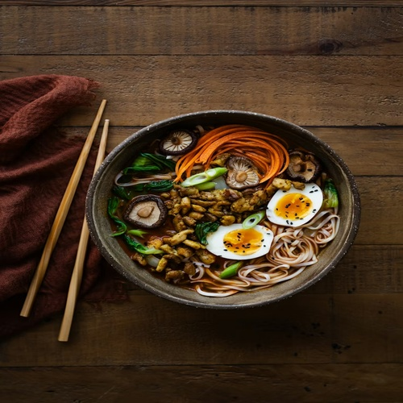
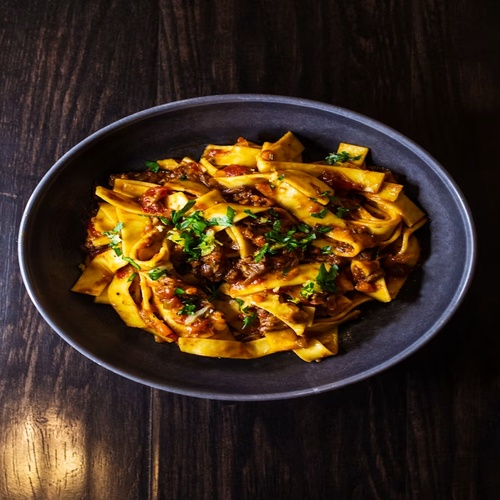
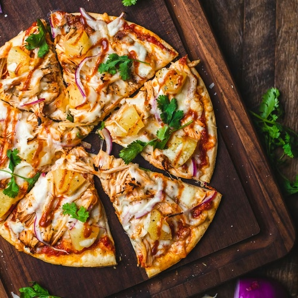
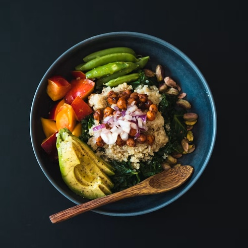
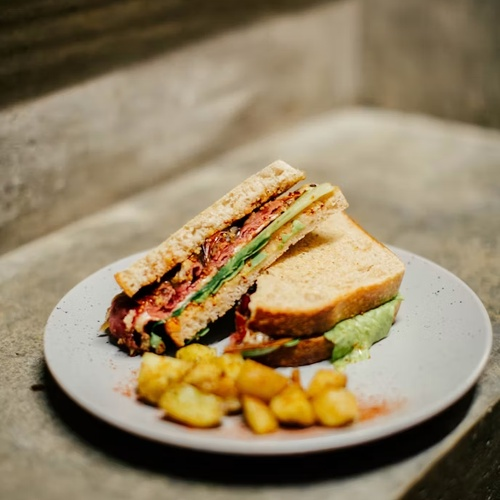

Hello,we are The Concious Fork,your premium food delivery service.We know you're always busy. No time for cooking.So let us take care of that,we're really good at it,we promise!
Never cook again! We really mean that. Our subscription plans include up to 365 days/year. You can also choose to order more flexibly if that's your style.
You're only twenty minutes away from your delicious and super healthy meals delivered right to your home. We work with the best chefs in each city to ensure that you're 100% happy.
All our vegetables are fresh, organic and local. Animals are raised without added hormones or antibiotics. Good for your health, the environment, and it also tastes better!
We don't limit your creativity, which means you can order whatever you feel like. You can also choose from our menu containing over 100 delicious meals. It's up to you!







